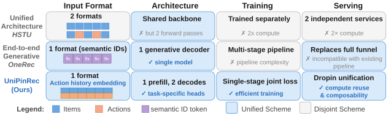
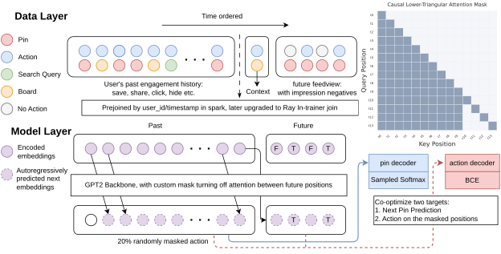
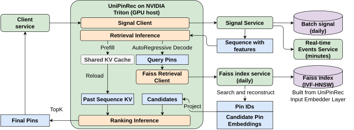

UniPinRec：在 Pinterest 规模上统一生成式检索与排序
摘要
现代推荐系统主要将检索和排序训练为相互独立的模型，尽管二者都日益依赖编码相同用户行为数据的大型 transformer，导致参数、计算和线上服务成本重复。 先前的工作统一了模型架构，但未统一整个流程：输入格式、训练流程和服务栈在各阶段之间仍然割裂。
我们提出 UniPinRec，在 Pinterest 实现了检索与排序的全栈统一：一种输入格式、一个模型、一个训练阶段，并部署在现有的服务基础设施内。 一个共享 transformer 将用户行为序列编码为与候选无关的表示，再通过任务特定头分支到检索（ANN 点积）和排序（交叉注意力）。 三项思想使之可行：(1) 掩码行为建模（Masked Action Modeling，MAM）消除了交织（interleaving），从而在无需将上下文长度翻倍的情况下实现权重共享；(2) 混合训练样本将行为序列与 feedview 曝光列表配对，以联合满足两个目标；(3) 跨阶段 KV 缓存共享复用检索阶段对用户历史的计算用于排序，相比服务两个独立模型降低了总 FLOPs。
UniPinRec 部署于 Pinterest 核心场景，带来约 +1% 的线上互动提升，同时将端到端服务延迟降低 11.1%，并将 QPS 提升 63.6%。 据我们所知，这是首次实现检索与排序的全栈统一，涵盖输入、模型、训练和服务，并部署于生产推荐系统。
1. 引言
现代工业推荐系统 (Chen et al., 2025b; Agarwal et al., 2025; Xia et al., 2023) 被构建为多级漏斗：候选生成从数百万物品的语料库中检索出数千个物品，排序用更丰富的特征对这些候选打分，混排（blending）组装最终页面。 每个阶段都以各自的架构、目标和训练数据孤立训练。 这种分离带来一项根本代价：检索和排序都从相同的用户行为数据中学习表示，却无法共享参数或在阶段之间迁移已学到的信号。

以 transformer 为基础的序列模型在每个阶段都成为主导骨干 (Zhai et al., 2024; Ye et al., 2025a; Chen et al., 2026; Sun et al., 2026b; Dai et al., 2025)，这使得这种冗余更加突出。 当两个阶段都由编码相同用户行为历史的大型 transformer 驱动时，重复就成为低效的主要来源：在参数、训练计算和服务成本上皆是如此。 这创造了一个具体的机会：将两个阶段统一为单一模型，对用户只编码一次，从共同表示服务两个阶段，并实现信号共享——排序监督为检索提供信息，而检索更广泛的语料曝光对排序起正则化作用 (Dai et al., 2025; Sun et al., 2026b)。
我们将这一目标称为 全栈统一（图 1）：不仅共享模型架构，而且共享整个流程，包括输入格式、训练和服务基础设施。 在本文中，我们实现了全栈统一，并将其部署于 Pinterest 生产环境。
为何全栈统一很困难。
有三项挑战阻碍了先前工作实现这一点。 (1) 使用方式分歧： 尽管骨干架构已经趋同，但计算模式仍然不同：检索必须在毫秒级延迟下对数百万候选打分（例如通过 ANN 点积打分 (Agarwal et al., 2025)），而排序只对数百个候选打分，且能承担更丰富的逐候选计算（例如交叉注意力 (Chen et al., 2025b; Zhai et al., 2024)）。 (2) 训练复杂性： 检索和排序使用不同的目标（在全语料上的采样 softmax 对比在小曝光集上的二分类），但先前关于下一行为预测的工作 (Chen et al., 2025b; Xia et al., 2025) 已经表明这些任务可能是互补的。尽管如此，现有的统一模型仍需借助多阶段流程（预训练、微调、RL 对齐）来协调二者，这增加了复杂性，而复杂性本身又阻碍了全栈统一。 (3) 服务和运维挑战： 统一模型必须以低于分别部署的成本提供服务，才能证明这一变更是合理的；另一个理想特性是与现有候选生成器（例如关键词、热门趋势）的可组合性，并保留决定统一程度的灵活性，以及独立地对每个阶段进行 A/B 测试和回滚的能力。 这些挑战在很大程度上尚未被探索；很少有系统在生产环境中部署统一的检索-排序模型 (Deng et al., 2025; Sun et al., 2026b)。
现有方法为何不足。
我们的方法。
我们的设计原则是组合现有且经过验证的组件（ANN 索引、交叉注意力排序、KV 缓存），而非引入新机制，使统一模型成为现有生产基础设施中的即插即用替代方案。 统一并不仅仅是优雅性目标：独立的排序器会重复检索已经执行的昂贵用户历史编码。通过共享这一计算，UniPinRec 以边际成本增加排序能力，使得在仅检索的同等延迟预算内进行排序变得可行。
UniPinRec 通过三项设计选择实现这一点。第一，掩码行为建模为用于检索的同一非交织用户序列添加排序监督。第二，混合训练样本和联合损失在单一阶段训练检索和排序。第三，跨阶段 KV 缓存共享让排序复用检索的用户历史计算，在避免重复 transformer 计算的同时保持模块化服务。
这些选择共同实现了全栈统一：两个阶段使用相同的输入格式，单阶段联合训练，并部署在现有服务基础设施内。
结果。
统一模型在保持检索召回率的同时增加了排序能力并降低了服务成本，这种组合在没有模型/系统协同设计的情况下无法实现。 离线评测中，UniPinRec 相比生产排序器将排序 Hit@3 提升 ，同时达到与生产检索相当的召回率。
由于 UniPinRec 通过共享骨干耦合检索和排序，最自然的增量上线方案从 L0 一侧开始：我们将检索与 L1 轻量级排序作为单一服务（L0+L1）上线，随后再扩展到 L2 精排。这样保持下游排序器/混排不受影响，并让我们在早期获得清晰的 A/B 归因。
2. 相关工作
基于 transformer 的推荐架构。
HSTU (Zhai et al., 2024) 确立了以 transformer 为主导骨干的生成式推荐新范式，后续工作扩展了容量 (Ye et al., 2025a, b; Chen et al., 2026; Yan et al., 2026; Pardoe et al., 2026)、改进了多任务优化 (Yang et al., 2025; Zhang et al., 2026; Yuan et al., 2024; Cao et al., 2025)，或进一步将该思想生产化 (Han et al., 2025; Hertel et al., 2025)。 OnePiece (Dai et al., 2025) 在共享骨干上应用统一多任务训练，用于 Shopee 的级联排序。 RelayGR (Wang et al., 2026) 实现了跨流水线阶段的 KV 缓存复用，但假设模型是独立训练的。 这些方法各自实现了部分统一，无论是在架构（HSTU、OnePiece）、训练（OnePiece）还是服务（RelayGR）方面，但都没有端到端地统一输入、模型、训练和服务。
端到端生成式方法。
OneRec (Deng et al., 2025)、OneRanker (Sun et al., 2026b) 和 GPR (Zhang et al., 2025a) 用通过自回归解码生成候选的生成式模型取代级联流水线。 这一范式已被扩展到统一搜索与推荐 (Gao et al., 2025; Chen et al., 2025a; Yan et al., 2025)，并在多家公司部署 (Han et al., 2025; Sun et al., 2026a; Zou et al., 2026; Su et al., 2026)。 除基础设施方面的顾虑外，近期工作 (Yang et al., 2024; Ding et al., 2026) 表明，由于有损压缩、生成目标的低效以及冷启动失败，使用语义 ID 的生成式检索相对于稠密检索并非明显胜出；此外，词元关系被记忆在参数中，而不是委托给外部可扩展索引，而在后者中嵌入邻近性得以自然保持。
3. 方法
3.0.1. 背景：

UniPinRec 建立在 PinRec (Agarwal et al., 2025) 之上，后者是一个生成式检索模型。每个物品由预训练的物品嵌入 Omnisage(Badrinath et al., 2025) 以及基于 CLIP 的多模态嵌入(Beal et al., 2026) 表示，搜索查询使用预训练的搜索嵌入(Agarwal et al., 2024)。这些特征通过 MLP 投影为 归一化的嵌入。给定用户正向互动物品的历史 ，PinRec 将嵌入序列输入仅解码器的因果 transformer，并使用在批内负样本和随机负样本上的采样 softmax 损失进行训练：
| (1) |
其中 是频率校正后的相似度， 是候选 的估计采样概率（通过 count-min sketch 计算）， 是负样本集合。模型通过最小化在历史所有位置上平均的 进行优化。
本节结构。
3.1. 为排序重构 PinRec
将 PinRec 扩展到排序需要三项改动：
-
(1)
目标： 模型不再最大化全语料上的下一物品似然，而是要在较小的曝光集上预测逐候选的行为概率。
-
(2)
监督标签：监督信号从物品嵌入上的 softmax 转变为每种行为类型的二值标签 （点击、保存、隐藏等），并使用逐头二元交叉熵进行训练。
-
(3)
数据：训练样本必须包含曝光负例（展示但未被互动的物品），而不仅仅是正向互动（详见第 3.2 节）。
3.1.1. 掩码行为建模
核心问题是如何将行为预测形式化为一个序列学习问题，从而使排序目标能够共享检索主干。 HSTU (Zhai et al., 2024) 方法在物品之间交错插入行为词元以确保行为预测是候选感知的，但这会使上下文长度翻倍，并破坏与检索的输入格式兼容性。
我们提出 掩码行为建模（MAM）：行为沿特征维度与每个物品嵌入拼接，并在训练过程中随机掩码，从而在保持因果性（模型在预测某一行为之前无法看到该行为）的同时不膨胀序列长度。 类似的掩码-预测思想出现在 (Huang et al., 2025) 中，用于信息流曝光。据我们所知，我们是首个将行为监督直接应用于用于检索的用户序列主干的工作。这在同一次前向传播中实现排序，同时通过更密集的逐位置梯度提升检索质量。
-
(1)
输入表示。 我们没有在每个物品之后交错插入专门的行为词元，而是通过线性层将行为多热向量 编码为稠密嵌入，并在输入投影器之前沿特征轴将其与物品表示拼接。 投影器将拼接后的表示映射到 transformer 隐藏维度。
-
(2)
掩码策略。 对于用户观测历史（过去）中的位置，每个行为以概率 独立地被掩码。 对于候选（未来）位置，行为始终被掩码（，对所有 均成立），因为在推理时，候选上的行为是未知的。
当某个位置被掩码时，其行为类型输入被替换为专门的 [MASK] 类别（在行为词表中追加的一个额外独热维度），从而模型可以区分“行为未知”与“未采取行为”。
这保证了无信息泄露。输入掩码（）将 替换为 [MASK] 词元，且因果注意力将位置 限制为 ，因此隐藏状态满足：
(2) 确保 仅依赖于 和 。
-
(3)
注意力模式。 Transformer 处理拼接序列 时采用修改后的因果掩码（图 2，右上），遵循 (Zhai et al., 2024) 中的 M-FALCON 模式：过去位置保留标准因果注意力；每个候选位置 关注所有过去位置 ，但不能关注其他候选。 所有候选位置共享固定的位置 ID、信息流视图类型和时间戳，以确保无偏评分。 由于候选之间不能相互关注，掩码将注意力成本从 降低到 ；我们通过 flex attention (He et al., 2024) 实现这种稀疏性，它将块稀疏模式编译为融合的 CUDA 内核。 该模式还支持跨阶段的 KV 缓存共享（第 3.3.3 节）：检索缓存 的历史计算，排序以 的边际成本复用它。
-
(4)
训练目标。 序列的过去部分 保持与检索模型输入相同的长度和位置结构，并且实际上用于检索：在这些位置上应用相同的下一物品预测目标。 个候选物品 被附加在过去部分之后，完整序列在单次前向传播中处理。这使得与检索模型完全共享参数。模型使用两个联合优化的损失进行训练：
-
(a)
下一物品预测损失（检索目标）：与第 3.0.1 节中的采样 softmax 损失相同，应用于每个未掩码的过去位置：
(3) -
(b)
行为预测损失（排序目标）：在每个行为被掩码的位置，模型必须独立预测每种行为类型。对于每种行为类型 ，专门的 MLP 头 产生一个标量 logit，逐头权重 控制其贡献。分别对过去（已掩码）位置和未来（始终掩码）位置应用独立的项：
(4) 其中， 是行为类型的数量， 是 Transformer 在位置 的隐藏状态， 是行为类型 的 MLP 头， 是行为 在位置 的二值标签， 是被掩码的过去位置集合， 是经超参数调优的标量权重，用于平衡各类行为（如保存、点击、隐藏）的贡献，以及它们相对于下一物品预测损失的贡献。
总损失为：
(5) 
Figure 3. UniPinRec 的协同服务拓扑。检索和排序是独立的 Triton 集成节点；二者之间是对 CPU 托管的 Faiss 索引进行 ANN 查找。ANN 同时返回候选 Pin ID 及其重建的物品嵌入，使排序阶段免于单独获取嵌入。共享的 KV 池由排序复用。 -
(a)
-
(5)
相对于交错插入的关键优势。
-
(a)
无上下文长度膨胀：序列长度与检索模型保持相同。
-
(b)
完全权重共享：排序模型可以直接从检索检查点初始化。
-
(c)
去噪正则化：随机掩码鼓励模型在行为不可用时依赖物品内容，从而提升推理时的泛化能力。
-
(a)
3.2. 数据基础设施
联合训练引入了单任务模型所不具备的数据需求：每个训练样本必须同时包含用户的互动历史（用于检索目标）和带有负例结果的完整曝光列表（用于行为预测目标）。 现有的检索数据集和排序数据集都不能同时满足这两个约束。 大规模构建这种统一格式 是全栈统一的前提条件。 下面我们描述如何构建和提供这些样本。
3.2.1. 以信息流视图为中心的数据集构建
一个关键的数据设计选择使我们的工作区别于以往的序列推荐模型。 检索模型通常在仅含行为的序列（按时间顺序的互动）上训练 (Zhai et al., 2024; Agarwal et al., 2025; Deng et al., 2025)，而排序模型在曝光日志（展示给用户的完整列表，包含已互动和无行为两种结果）上训练 (Hertel et al., 2025; Dai et al., 2025)。 以往关于统一模型的工作未讨论如何构建同时满足两个目标的训练数据；联合训练需要二者兼有：检索目标需要正向行为历史来预测下一物品，而排序目标需要完整曝光列表来学习。
我们通过为每个训练样本构建一个 过去行为序列并配以一个 未来信息流视图（来自后续请求的完整曝光列表，带互动标签）来弥合这一差距。 具体而言，序列中的每个位置是一个（Pin、界面、行为、时间戳）元组，其中行为涵盖模型所预测的互动词表（仅曝光、点击、保存、分享、隐藏等）。
由于互动事件相对于曝光天然稀疏，训练流水线对未互动的信息流视图进行子采样（保留 ）以放大稀有互动类别。评估流水线不进行降采样，并使用随机重放数据集，从而保持自然的无偏分布。这也有利于检索，因为它反映了真实流量分布。
3.2.2. Ray 训练器内连接
我们通过执行 训练器内分桶连接，利用 Ray (Moritz et al., 2018) 分布式数据加载层，消除了离线连接引入的用户行为历史扇出。用户行为序列和信息流视图记录分别保存在独立的 Iceberg 表中，各自按用户 ID 哈希分桶，并在训练时于内存中连接。 这完全避免了数据重复，并使上下文长度、采样比例和过滤成为训练时可调整的参数，而非在数据生成时就需确定的参数。
3.3. 服务基础设施
图 3 展示了本节所述的端到端协同服务拓扑。
统一模型只有在能够替代两个独立模型而不使服务成本翻倍时，才能带来效率收益。 我们的模型设计/训练协议的两个特性使这一点变得可行。 首先，非交错架构和统一协同训练（第 3.1.1 节）保证了相同的模型权重，并产生与候选无关的用户表示，这些表示可以缓存一次并在各阶段复用。 其次，检索阶段和排序阶段共享相同的物品嵌入空间，因此无需维护单独的候选表示。
3.3.1. 背景：
我们基于生产环境的 PinRec (Agarwal et al., 2025) 服务栈构建，该服务栈使用 Triton 集成来组装用户历史、运行自回归检索，并通过 CPU 托管的 Faiss 索引执行 ANN 查找。
3.3.2. 整体服务设计
UniPinRec 保留了该服务栈的大部分，并在 Faiss 下游附加了一个新的排序节点。 排序节点消费 ANN 的候选集以及一个 KV 缓存槽标识符（详见下文第 3.3.3 节）。 它不重新处理完整用户历史，而是运行增量前向传播：仅处理候选词元，回看 KV 缓存历史以产生逐候选的行为概率。
ANN 索引已存储每个 Pin 的嵌入向量（嵌入器 MLP 在索引构建时计算的输出）。 我们使用 Faiss.search_and_reconstruct，它在一次调用中同时返回候选 Pin ID 及其存储的嵌入。 这些预嵌入向量直接作为排序阶段的候选词元。 这消除了候选侧额外的嵌入器前向传播和特征获取，并保证检索阶段和排序阶段针对相同的表示进行评分。
3.3.3. 跨阶段的 KV 缓存共享
我们 Transformer 中的主要开销是编码用户行为历史（ 个词元， 自注意力）；利用这段历史对 个候选评分只需要 。 我们在排序时完全避免了 的成本，具体做法是将 PinRec 的逐请求 KV 缓存（第 3.3.1 节）扩展为跨阶段、跨进程共享：排序直接关注缓存的历史 KV，无需重新编码。 我们进一步遵循 M-FALCON (Hertel et al., 2025) 的单位矩阵掩码设计，阻止候选之间相互关注，使每个候选的评分独立于批次组成。 最终的排序成本为 。
检索和排序作为具有独立 CUDA 上下文的不同操作系统进程运行，这在基于微服务的服务栈中很常见。 跨进程对 KV 张量进行朴素序列化会引入主导延迟的 GPU-主机-GPU 往返。 我们改为预分配一个 GPU 内存池，两个进程都将其映射到各自的地址空间，因此排序进程读取检索进程写入的 KV 状态，而无需 CPU 到 GPU 的数据传输。
因此，每个检索副本在启动时分配一个预设定大小的 GPU 池，形状为 （层、槽、KV 头、过去序列长度、头维度），将其存储的 CUDA IPC 句柄导出到每个实例的文件中，排序进程打开这些句柄并将同一物理 GPU 分配映射到自己的地址空间。
槽以轮询方式复用， 每个排序消费者在前向传播期间将每个请求的过去 KV 从其映射池中的槽复制到自己的解码缓存中。
3.3.4. FP8 量化
为了进一步提高服务效率，我们使用混合精度 FP8 训练和推理。我们使用来自 Transformer Engine 库的融合模块，将层归一化、线性投影和激活组合为单一内核，避免中间的全精度物化。训练使用混合 FP8 格式，前向传播期间使用 E4M3，反向计算使用 E5M2，从而使前向激活和反向梯度在精度和动态范围之间保持适当平衡。量化导致离线指标下降 0.5%，我们将其视为换取效率提升的合理权衡。
4. 结果
我们围绕三个研究问题组织结果：
-
•
RQ1：我们能否训练一个既能完成检索任务又能完成排序任务的统一模型？
-
•
RQ2：我们能否将检索模型和排序模型协同服务，以实现最小的计算冗余？
-
•
RQ3：我们能否使这个统一模型成为对现有生产级推荐系统的一种易于实现的扩展？
4.1. 训练一个统一的检索与排序模型（RQ1）
我们展示生成式推荐范式可以扩展到排序模型。这需要（1）跨阶段的架构兼容性以支持参数共享，以及（2）以检索和排序双重目标进行联合训练，以允许任务之间的信号共享。
基线与训练策略。
我们将 UniPinRec 与多个基线和训练方法进行比较：
TransAct V2 + DCNv2 (Xia et al., 2025)：同期训练的生产排序模型，是一个基于 transformer 的模型，具有长用户序列和其他特征交叉模块。
HSTU (Zhai et al., 2024)：最先进的统一检索与排序模型，采用动作与物品交错排列 (Zhang et al., 2025b)。我们在检索和排序两个任务上评估 HSTU，采用统一交错范式并匹配有效序列长度。
PinRec (Agarwal et al., 2025)：生产检索模型，是一个 12 层 transformer，采用下一物品预测（采样 softmax）训练。仅用于检索；不具备排序能力。
PinRec 微调：一种顺序训练方法，我们取上述快照（PinRec），然后通过添加动作预测目标对其进行微调以用于排序。关键在于，在微调期间物品嵌入器必须保持冻结，以维持与预训练检索模型 Faiss 索引的兼容性以便部署。
UniPinRec w/o item loss：一个仅用于排序的变体，仅使用动作预测损失训练，采用与统一模型相同的 MAM 架构。该消融通过移除检索目标来隔离联合训练的效果。
UniPinRec（本文方法）：采用掩码动作建模的统一模型，对检索和排序使用相同的非交错序列格式。以下一物品预测（检索）和动作预测（排序）双重损失联合训练。物品嵌入器可训练，并从两个目标中受益。
结果。
表 1 显示，与专用基线相比，UniPinRec 在检索（Recall@10，即在未来 feedview 中发生交互的目标，由任意自回归生成的查询嵌入正确检索进 top 10）和排序（“save” Hit@3，按 save 头分数排序）两方面均取得了具有竞争力的性能。我们使用“Board More Ideas” feed 数据进行训练和评估。更多线上结果将在第 5.2 节讨论
| Strategy | Hit@3 | Recall@10 |
|---|---|---|
| TransActV2 + DCNv2 | 0.088008 | N/A |
| HSTU | 0.097326 | 0.76161 |
| PinRec | N/A | 0.77486 |
| PinRec finetuned | 0.095869 | N/A |
| UniPinRec w/o item loss | 0.097345 | N/A |
| UniPinRec (ours) | 0.10096 | 0.77659 |
在检索方面，UniPinRec 与 PinRec 的 Recall@10 相当，仅有 +0.2% 的微小提升，表明以排序目标进行联合训练不会降低检索质量。这对部署至关重要：该统一模型可作为生产检索系统的直接替代品。
在排序方面，UniPinRec 超越了 TransActV2+DCNv2——即包含专用特征交叉模块的同期生产排序模型——提升幅度为 14.7%，尽管它在单一模型中同时处理检索和排序。在相同的上下文长度预算下，UniPinRec 也优于 HSTU。重要的是，UniPinRec 优于仅排序变体（UniPinRec w/o item loss），表明联合检索目标进一步提升了排序质量。PinRec 微调方法尽管从强大的检索模型出发，却不如联合训练。冻结嵌入器的约束阻止模型为排序任务调整物品表示，而联合训练允许嵌入器同时从两个任务中学习。这一差距表明，仅靠架构兼容性是不够的，必须进行联合优化才能充分利用统一训练。
4.2. 协同服务检索与排序模型（RQ2）
统一主干只有在其不作为两个独立的模型提供服务时，才能声称具有效率优势。 排序前向传播中的主要计算开销是对用户历史的自注意力；当检索和排序分别服务时，每个请求需为此付出两次代价。 我们的统一设计在检索期间对历史进行一次编码，并复用生成的键和值作为后续排序阶段的 KV 缓存，将排序转变为 解码 步骤，即从候选向冻结的历史进行注意力计算，而非完整的 预填充。
我们在表 2 中测量了这种复用的影响，在 NVIDIA L40S（、、、）上进行，除路径外还变化了三个正交的调节手段：激活数据类型（bf16 vs. 使用 Transformer Engine 融合矩阵乘法的 fp8）、注意力实现（SDPA vs. 自动调优的 flex attention），以及运行时（eager Python 调度、torch.compile 或 CUDA graph 捕获）：
-
•
KV 缓存复用（预填充解码）大约带来 。
-
•
使用 Transformer Engine 矩阵乘法及 CUDA 图捕获的 fp8 带来 的提升，比较基线为 bf16+compile。
-
•
Flex attention 在任何数据类型之上均稳定贡献 。
这三种优化手段基本相互正交，因此叠加后获得最大的端到端 ，见表 2 的右下角单元格。
| Dtype | Attn | Runtime | Lat. (ms) | Speedup |
| Prefill (history recomputed) | ||||
| bf16 | SDPA | compile | 25.72 | |
| bf16 | flex | compile | 19.70 | |
| fp8 | SDPA | eager | 18.92 | |
| fp8 | SDPA | compile | 18.91 | |
| Decode (KV-cache reuse, GPU memcpy overhead included) | ||||
| bf16 | SDPA | compile | 10.42 | |
| bf16 | flex | compile* | 8.57 | |
| fp8 | SDPA | graph | 8.77 | |
| fp8 | flex | graph | 6.56 | |
| Variant | E2E latency | QPS lift |
|---|---|---|
| baseline | — | — |
| + bf16 decode flex compile* | ||
| + fp8 decode flex graph |
我们进一步在线上条件下对 bf16 和 fp8 的最佳组合进行基准测试（表 3）。 我们观察到的 fp8 内核的一个主要权衡是，需要等待并累积请求以形成更大的批大小，以满足 Transformer Engine 的形状约束，即展平后的首维 必须是 8 的倍数；这主要约束了检索前向传播中 的自回归步骤。结果导致 QPS 增加，但延迟更大。对于所报告的线上实验，我们使用了 bf16，但计划在后续步骤中继续采用 fp8。
4.3. 消融实验
4.3.1. MAM 中掩码比例的影响
掩码动作建模（MAM）的一个核心设计选择是掩码概率 ，它控制在训练期间用户序列中的历史动作被随机掩码的频率。我们通过在相同数据和超参数下训练 的变体来消融这一选择，保持所有其他架构决策不变。
结果。
表 4 显示，任何掩码均优于不掩码（）。零掩码基线取得最低的 Hit@3，证实额外的动作预测信号和正则化均有助于提升排序质量。 其中 取得最佳整体性能。更高的掩码（）显示出收益递减，可能是因为过于激进的掩码从用户历史中移除了过多信号。
| Hit@3 | |
|---|---|
| 0.0 (no masking) | 0.09923 |
| 0.1 | 0.10078 |
| 0.2 | 0.10096 |
| 0.3 | 0.10075 |
4.3.2. 模型缩放的影响
我们研究模型容量如何通过两个维度影响排序性能：transformer 深度和序列长度。 理解这些权衡对部署至关重要，因为两个维度都会影响模型质量、训练成本和服务延迟。
结果。
我们训练了不同深度（2、4、8、12、24 层）且序列长度固定为 1024 个词元的模型，以及不同序列长度（256、512、1024、2048 个词元）且固定 12 层模型的变体。两个维度均使用带 的 MAM。图 4 显示，性能在两个缩放轴上均持续提升，表明统一模型在容量上尚未饱和。然而，成本影响差异显著：深度随计算线性缩放，而序列长度对注意力产生二次成本。这使得序列长度成为延迟敏感型应用中更严重的瓶颈，尽管两个维度都显示出持续的质量提升。 更长序列带来的显著收益表明，序列压缩技术是一条有前景的方向，能够在降低成本的条件下获得更长上下文的质量收益。
5. 线上 A/B 实验（RQ3）
我们通过受控的 A/B 实验在生产环境中评估 UniPinRec，将统一模型与 PinRec (Agarwal et al., 2025)（生产检索基线）进行比较。这验证了全栈统一能否在真实流量中带来参与度提升，同时保持实际的服务效率，并回答了第三个 RQ：我们能否对现有生产推荐系统实现这种高度模块化的扩展。
5.1. 实验设置
部署配置。
我们比较候选生成器的两种设置，两者均向下游阶段返回 K(<3000) 个候选：
基线（PinRec）：生产检索模型通过 ANN 搜索生成 K 个候选，直接传递到下游排序阶段。
UniPinRec：统一模型首先通过 ANN 搜索超额获取候选（L0），然后立即使用排序头（L1）结合动作预测对其进行排序，并将 top K 排序候选（基于头部效用函数）返回给下游阶段。
值得注意的是，在线上实验中，我们用统一的 L0 + L1 打分服务器替换检索阶段，并仍然将精炼后的候选发送到基于 TransAct V2 (Xia et al., 2025) 的下游生产排序器，以严格验证指标提升。这也意味着离线提升会被衰减和稀释。
我们在两个生产场景上运行 A/B 实验：Board More Ideas（L0 超额获取比例约 2 倍）和 Notification（L0 超额获取比例约 3 倍）。两个场景每天服务数百万用户。
5.2. Board More Ideas
Board More Ideas（BMI）推荐锚定在用户图板上的 Pin。 为实现这一点，我们将 UniPinRec 扩展为支持“图板”作为除 Pin 和搜索查询之外的新序列模态。
结果。
表 5 显示，UniPinRec 相比 PinRec 基线提供了强劲的参与度提升，场景 save 提升为 +0.95%，表明统一的检索与排序方法相比仅检索显著改善了候选质量，同时也带来了 +0.08% 的全站提升，证实更好的 BMI 推荐对整体平台参与度产生了积极影响。
| Metric | UniPinRec |
|---|---|
| BMI surface saves | +0.95% |
| Site-wide saves | +0.08% |
5.3. 通知
Pinterest 使用电子邮件和推送通知向用户传递相关内容。这些通知是用户召回和长期留存的重要手段。
结果。
表 6 显示，用 UniPinRec 排序器替换仅检索的 PinRec 基线，在各项通知参与度指标上均带来一致收益，其中通知场景 save 的提升最大。休眠用户推送打开提升为 +1.72%，约为全用户提升的两倍，表明更个性化的通知推荐在召回流失用户方面尤其有效，并显著将 WAU 提升了 0.09%。
| Metric | UniPinRec |
|---|---|
| Push opens | +0.91% |
| Push opens (dormant users) | +1.72% |
| Notification surface saves | +3.84% |
| Email clicks | +0.30% |
| Weekly active users | +0.09% |
6. 结论
我们提出了 UniPinRec，这是首个在生产推荐系统中部署的检索与排序全栈统一方案。 在实证上，该统一模型检索召回率与生产基线相当，排序质量超过专用排序器，并在提升 QPS 的同时降低端到端延迟，能够呈现此前漏斗流程所遗漏的候选，并在线上转化为净互动量的提升。
UniPinRec 目前将检索与上层漏斗排序统一起来，而这一环节的主干冗余最为严重。 它尚未取代 L2 排序器，因为后者在分数校准、训练数据记录和运维工具方面还有额外的基础设施依赖，超出了本工作的直接范围。我们采取逐步上线的策略，并计划将统一工作扩展到 L2 阶段，并横向扩展到更多场景（搜索、广告）作为下一步。
在架构上，UniPinRec 类似于检索增强生成：主干网络形成一个查询，ANN 索引充当非参数化记忆，而排序器通过同一缓存上下文生成动作概率。 这种相似性提示可以从 RAG 文献中借鉴，例如迭代检索和可学习的检索深度控制，作为未来的研究方向。
此前的统一模型已经证明检索与排序可以共享一种架构。 UniPinRec 表明，更困难的问题——统一输入格式、训练和服务基础设施——在当今生产环境中同样可以解决。
致谢。
我们感谢 Kyle Soares、Pihui Wei、Anirudhan Badrinath、Edoardo Botta、Devin Kreuzer、Josie Zeng、Chi Zhang、Chen Yang、Po-Wei Wang、David Woo、Lei Wang、Lin Zhu、Kritarth Anand、Bowen Deng、Matt Chun、Zisis Petrou、Dimitra Tsiaousi、Dylan Wang 等合作者在整个工作开发过程中给予的有益支持、宝贵反馈和富有洞见的讨论。参考文献
- Agarwal et al. (2025) Prabhat Agarwal, Anirudhan Badrinath, Laksh Bhasin, Jaewon Yang, Edoardo Botta, Jiajing Xu, and Charles Rosenberg. 2025. PinRec: Outcome-Conditioned, Multi-Token Generative Retrieval for Industry-Scale Recommendation Systems. arXiv preprint arXiv:2504.10507 (2025).
- Agarwal et al. (2024) Prabhat Agarwal, Minhazul Islam SK, Nikil Pancha, Kurchi Subhra Hazra, Jiajing Xu, and Chuck Rosenberg. 2024. OmniSearchSage: Multi-Task Multi-Entity Embeddings for Pinterest Search. In Companion Proceedings of the ACM Web Conference 2024 (WWW ’24). ACM, 121–130. doi:10.1145/3589335.3648309
- Badrinath et al. (2025) Anirudhan Badrinath, Alex Yang, Kousik Rajesh, Prabhat Agarwal, Jaewon Yang, Haoyu Chen, Jiajing Xu, and Charles Rosenberg. 2025. OmniSage: Large Scale, Multi-Entity Heterogeneous Graph Representation Learning. In Proceedings of the 31st ACM SIGKDD Conference on Knowledge Discovery and Data Mining V.2 (Toronto ON, Canada) (KDD ’25). Association for Computing Machinery, New York, NY, USA, 4261–4272. doi:10.1145/3711896.3737253
- Beal et al. (2026) Josh Beal, Eric Kim, Jinfeng Rao, Rex Wu, Dmitry Kislyuk, and Charles Rosenberg. 2026. PinCLIP: Large-scale Foundational Multimodal Representation at Pinterest. arXiv:2603.03544 [cs.CV] https://arxiv.org/abs/2603.03544
- Cao et al. (2025) Yang Cao, Changhao Zhang, Xiaoshuang Chen, Kaiqiao Zhan, and Ben Wang. 2025. xMTF: A Formula-Free Model for Reinforcement-Learning-Based Multi-Task Fusion in Recommender Systems. In Proceedings of the ACM Web Conference 2025 (WWW).
- Chen et al. (2025a) Jiahui Chen, Xiaoze Jiang, Zhibo Wang, Quanzhi Zhu, Junyao Zhao, Feng Hu, Kang Pan, Ao Xie, Maohua Pei, Zhiheng Qin, Hongjing Zhang, Zhixin Zhai, Xiaobo Guo, Runbin Zhou, Kefeng Wang, Mingyang Geng, Cheng Chen, Jingshan Lv, Yupeng Huang, Xiao Liang, and Han Li. 2025a. UniSearch: Rethinking Search System with a Unified Generative Architecture. arXiv preprint arXiv:2509.06887 (2025).
- Chen et al. (2025b) Xiangyi Chen, Kousik Rajesh, Matthew Lawhon, Zelun Wang, Hanyu Li, Haomiao Li, Saurabh Vishwas Joshi, Pong Eksombatchai, Jaewon Yang, Yi-Ping Hsu, Jiajing Xu, and Charles Rosenberg. 2025b. PinFM: Foundation Model for User Activity Sequences at a Billion-scale Visual Discovery Platform. In Proceedings of the 19th ACM Conference on Recommender Systems (RecSys). 381–390. doi:10.1145/3705328.3748050
- Chen et al. (2026) Zhimin Chen, Chenyu Zhao, Ka Chun Mo, Yunjiang Jiang, Jane H. Lee, Khushhall Chandra Mahajan, Ning Jiang, Kai Ren, Jinhui Li, and Wen-Yun Yang. 2026. Massive Memorization with Hundreds of Trillions of Parameters for Sequential Transducer Generative Recommenders. In Proceedings of the International Conference on Learning Representations (ICLR).
- Dai et al. (2025) Sunhao Dai, Jiakai Tang, Jiahua Wu, Kun Wang, Yuxuan Zhu, Bingjun Chen, Bangyang Hong, Yu Zhao, Cong Fu, Kangle Wu, Yabo Ni, Anxiang Zeng, Wenjie Wang, Xu Chen, Jun Xu, and See-Kiong Ng. 2025. OnePiece: Bringing Context Engineering and Reasoning to Industrial Cascade Ranking System. arXiv preprint arXiv:2509.18091 (2025).
- Deng et al. (2025) Jiaxin Deng, Shiyao Wang, Kuo Cai, Lejian Ren, Qigen Hu, Weifeng Ding, Qiang Luo, and Guorui Zhou. 2025. OneRec: Unifying Retrieve and Rank with Generative Recommender and Iterative Preference Alignment. arXiv preprint arXiv:2502.18965 (2025).
- Ding et al. (2026) Yijie Ding, Zitian Guo, Jiacheng Li, Letian Peng, Shuai Shao, Wei Shao, Xiaoqiang Luo, Luke Simon, Jingbo Shang, Julian McAuley, and Yupeng Hou. 2026. How Well Does Generative Recommendation Generalize? arXiv:2603.19809 [cs.IR] https://arxiv.org/abs/2603.19809
- Gao et al. (2025) Vianne R. Gao, Chen Xue, Marc Versage, Xie Zhou, Zhongruo Wang, Chao Li, Yeon Seonwoo, Nan Chen, Zhen Ge, Gourab Kundu, Weiqi Zhang, Tian Wang, Qingjun Cui, and Trishul Chilimbi. 2025. SynerGen: Contextualized Generative Recommender for Unified Search and Recommendation. arXiv preprint arXiv:2509.21777 (2025).
- Han et al. (2025) Ruidong Han, Bin Yin, Shangyu Chen, He Jiang, Fei Jiang, Xiang Li, Chi Ma, Mincong Huang, Xiaoguang Li, Chunzhen Jing, Yueming Han, Menglei Zhou, Lei Yu, Chuan Liu, and Wei Lin. 2025. MTGR: Industrial-Scale Generative Recommendation Framework in Meituan. In Proceedings of the 34th ACM International Conference on Information and Knowledge Management (CIKM). 5731–5738. doi:10.1145/3746252.3761565
- He et al. (2024) Horace He et al. 2024. Flex Attention: A Programming Model for Generating Optimized Attention Kernels. arXiv preprint arXiv:2412.05496 (2024). https://arxiv.org/abs/2412.05496
- Hertel et al. (2025) Lars Hertel, Neil Daftary, Fedor Borisyuk, Aman Gupta, and Rahul Mazumder. 2025. Efficient User History Modeling with Amortized Inference for Deep Learning Recommendation Models. In Companion Proceedings of the ACM Web Conference 2025 (WWW).
- Huang et al. (2025) Yanhua Huang, Yuqi Chen, Xiong Cao, Rui Yang, Mingliang Qi, Yinghao Zhu, Qingchang Han, Yaowei Liu, Zhaoyu Liu, Xuefeng Yao, Yuting Jia, Leilei Ma, Yinqi Zhang, Taoyu Zhu, Liujie Zhang, Lei Chen, Weihang Chen, Min Zhu, Ruiwen Xu, and Lei Zhang. 2025. Towards Large-scale Generative Ranking. CoRR abs/2505.04180 (2025). doi:10.48550/ARXIV.2505.04180 arXiv:2505.04180
- Moritz et al. (2018) Philipp Moritz, Robert Nishihara, Stephanie Wang, Alexey Tumanov, Richard Liaw, Eric Liang, Melih Elibol, Zongheng Yang, William Paul, Michael I. Jordan, and Ion Stoica. 2018. Ray: A Distributed Framework for Emerging AI Applications. In 13th USENIX Symposium on Operating Systems Design and Implementation (OSDI 18). 561–577.
- Pardoe et al. (2026) David Pardoe, Neil Daftary, Miro Furtado, Aditya Aiyer, Yu Wang, Liuqing Li, Tao Song, Lars Hertel, Young Jin Yun, Senthil Radhakrishnan, Zhiwei Wang, Tommy Li, Khai Tran, Ananth Nagarajan, Ali Naqvi, Yue Zhang, Renpeng Fang, Avi Romascanu, Arjun Kulothungun, Deepak Kumar, Praneeth Boda, Fedor Borisyuk, and Ruoyan Wang. 2026. CADET: Context-Conditioned Ads CTR Prediction With a Decoder-Only Transformer. arXiv preprint arXiv:2602.11410 (2026).
- Su et al. (2026) Zhengyang Su, Isay Katsman, Yueqi Wang, Ruining He, Lukasz Heldt, Raghunandan Keshavan, Shao-Chuan Wang, Xinyang Yi, Mingyan Gao, Onkar Dalal, Lichan Hong, Ed Chi, and Ningren Han. 2026. STATIC: Vectorizing the Trie: Efficient Constrained Decoding for LLM-based Generative Retrieval on Accelerators. arXiv preprint arXiv:2602.22647 (2026).
- Sun et al. (2026b) Dekai Sun, Yiming Liu, Jiafan Zhou, Xun Liu, Chenchen Yu, Yi Li, Jun Zhang, Huan Yu, and Jie Jiang. 2026b. OneRanker: Unified Generation and Ranking with One Model in Industrial Advertising Recommendation. arXiv preprint arXiv:2603.02999 (2026).
- Sun et al. (2026a) Yijia Sun, Shanshan Huang, Zhiyuan Guan, Qiang Luo, Ruiming Tang, Kun Gai, and Guorui Zhou. 2026a. GRank: Towards Target-Aware and Streamlined Industrial Retrieval with a Generate-Rank Framework. In Proceedings of the ACM Web Conference 2026 (WWW).
- Wang et al. (2026) Jiarui Wang, Huichao Chai, Yuanhang Zhang, Zongjin Zhou, Wei Guo, Xingkun Yang, Qiang Tang, Bo Pan, Jiawei Zhu, Ke Cheng, Yuting Yan, Shulan Wang, Yingjie Zhu, Zhengfan Yuan, Jiaqi Huang, Yuhan Zhang, Xiaosong Sun, Zhinan Zhang, Hong Zhu, Yongsheng Zhang, Tiantian Dong, Zhong Xiao, Deliang Liu, Chengzhou Lu, Yuan Sun, Zhiyuan Chen, Xinming Han, Zaizhu Liu, Yaoyuan Wang, Ziyang Zhang, Yong Liu, Jinxin Xu, Yajing Sun, Zhoujun Yu, Wenting Zhou, Qidong Zhang, Zhengyong Zhang, Zhonghai Gu, Yibo Jin, Yongxiang Feng, and Pengfei Zuo. 2026. RelayGR: Scaling Long-Sequence Generative Recommendation via Cross-Stage Relay-Race Inference. arXiv preprint arXiv:2601.01712 (2026).
- Xia et al. (2023) Xue Xia, Pong Eksombatchai, Nikil Pancha, Dhruvil Deven Badani, Po-Wei Wang, Neng Gu, Saurabh Vishwas Joshi, Nazanin Farahpour, Zhiyuan Zhang, and Andrew Zhai. 2023. TransAct: Transformer-based Realtime User Action Model for Recommendation at Pinterest. In Proceedings of the 29th ACM SIGKDD Conference on Knowledge Discovery and Data Mining, KDD 2023, Long Beach, CA, USA, August 6-10, 2023, Ambuj K. Singh, Yizhou Sun, Leman Akoglu, Dimitrios Gunopulos, Xifeng Yan, Ravi Kumar, Fatma Ozcan, and Jieping Ye (Eds.). ACM, 5249–5259. doi:10.1145/3580305.3599918
- Xia et al. (2025) Xue Xia, Saurabh Joshi, Kousik Rajesh, Kangnan Li, Yangyi Lu, Nikil Pancha, Dhruvil Badani, Jiajing Xu, and Pong Eksombatchai. 2025. TransAct V2: Lifelong User Action Sequence Modeling on Pinterest Recommendation. In Proceedings of the 34th ACM International Conference on Information and Knowledge Management (Seoul, Republic of Korea) (CIKM ’25). Association for Computing Machinery, New York, NY, USA, 6881–6882. doi:10.1145/3746252.3761433
- Yan et al. (2026) Bencheng Yan, Shilei Liu, Zhiyuan Zeng, Zihao Wang, Yizhen Zhang, Yujin Yuan, Langming Liu, Jiaqi Liu, Di Wang, Wenbo Su, Pengjie Wang, Jian Xu, and Bo Zheng. 2026. Unlocking Scaling Law in Industrial Recommendation Systems with a Three-step Paradigm based Large User Model. In Proceedings of the 19th ACM International Conference on Web Search and Data Mining (WSDM).
- Yan et al. (2025) Huimin Yan, Longfei Xu, Junjie Sun, Ni Ou, Wei Luo, Xing Tan, Ran Cheng, Kaikui Liu, and Xiangxiang Chu. 2025. IntSR: An Integrated Generative Framework for Search and Recommendation. arXiv preprint arXiv:2509.21179 (2025).
- Yang et al. (2024) Liu Yang, Fabian Paischer, Kaveh Hassani, Jiacheng Li, Shuai Shao, Zhang Gabriel Li, Yun He, Xue Feng, Nima Noorshams, Sem Park, Bo Long, Robert D. Nowak, Xiaoli Gao, and Hamid Eghbalzadeh. 2024. Unifying Generative and Dense Retrieval for Sequential Recommendation. arXiv preprint arXiv:2411.18814 (2024).
- Yang et al. (2025) Xiao Yang, Peifeng Yin, Abe Engle, Jinfeng Zhuang, and Ling Leng. 2025. MTMD: A Multi-Task Multi-Domain Framework for Unified Ad Lightweight Ranking at Pinterest. In Proceedings of the AdKDD Workshop at the 31st ACM SIGKDD Conference on Knowledge Discovery and Data Mining.
- Ye et al. (2025a) Yufei Ye, Wei Guo, Jin Yao Chin, Hao Wang, Hong Zhu, Xi Lin, Yuyang Ye, Yong Liu, Ruiming Tang, Defu Lian, and Enhong Chen. 2025a. FuXi-: Scaling Recommendation Model with Feature Interaction Enhanced Transformer. In Proceedings of the ACM Web Conference 2025 (WWW).
- Ye et al. (2025b) Yufei Ye, Wei Guo, Hao Wang, Hong Zhu, Yuyang Ye, Yong Liu, Huifeng Guo, Ruiming Tang, Defu Lian, and Enhong Chen. 2025b. FuXi-: Towards a Lightweight and Fast Large-Scale Generative Recommendation Model. arXiv preprint arXiv:2508.10615 (2025).
- Yuan et al. (2024) Jun Yuan, Guohao Cai, and Zhenhua Dong. 2024. A Parameter Update Balancing Algorithm for Multi-task Ranking Models in Recommendation Systems. In Proceedings of the 2024 IEEE International Conference on Data Mining (ICDM).
- Zhai et al. (2024) Jiaqi Zhai, Lucy Liao, Xing Liu, Yueming Wang, Rui Li, Xuan Cao, Leon Gao, Zhaojie Gong, Fangda Gu, Michael He, Yinghai Lu, and Yu Shi. 2024. Actions Speak Louder than Words: Trillion-Parameter Sequential Transducers for Generative Recommendations. In Proceedings of the 41st International Conference on Machine Learning (ICML).
- Zhang et al. (2025a) Jun Zhang, Yi Li, Yue Liu, Changping Wang, Yuan Wang, Yuling Xiong, Xun Liu, Haiyang Wu, Qian Li, Enming Zhang, Jiawei Sun, Xin Xu, Zishuai Zhang, Ruoran Liu, Suyuan Huang, Zhaoxin Zhang, Zhengkai Guo, Shuojin Yang, Meng-Hao Guo, Huan Yu, Jie Jiang, and Shi-Min Hu. 2025a. GPR: Towards a Generative Pre-trained One-Model Paradigm for Large-Scale Advertising Recommendation. arXiv preprint arXiv:2511.10138 (2025).
- Zhang et al. (2025b) Luankang Zhang, Kenan Song, Yi Quan Lee, Wei Guo, Hao Wang, Yawen Li, Huifeng Guo, Yong Liu, Defu Lian, and Enhong Chen. 2025b. Killing Two Birds with One Stone: Unifying Retrieval and Ranking with a Single Generative Recommendation Model. In Proceedings of the 48th International ACM SIGIR Conference on Research and Development in Information Retrieval (Padua, Italy) (SIGIR ’25). Association for Computing Machinery, New York, NY, USA, 2224–2234. doi:10.1145/3726302.3730017
- Zhang et al. (2026) Yukun Zhang, Si Dong, Xu Wang, Bo Chen, Qinglin Jia, Shengzhe Wang, Jinlong Jiao, Runhan Li, Jiaqing Liu, Chaoyi Ma, Ruiming Tang, Guorui Zhou, Han Li, and Kun Gai. 2026. SMES: Towards Scalable Multi-Task Recommendation via Expert Sparsity. arXiv preprint arXiv:2602.09386 (2026).
- Zou et al. (2026) Yanyan Zou, Junbo Qi, Lunsong Huang, Yu Li, Kewei Xu, Jiabao Gao, Binglei Zhao, Xuanhua Yang, Sulong Xu, and Shengjie Li. 2026. GenRec: A Preference-Oriented Generative Framework for Large-Scale Recommendation. In Proceedings of the 49th International ACM SIGIR Conference on Research and Development in Information Retrieval (SIGIR).